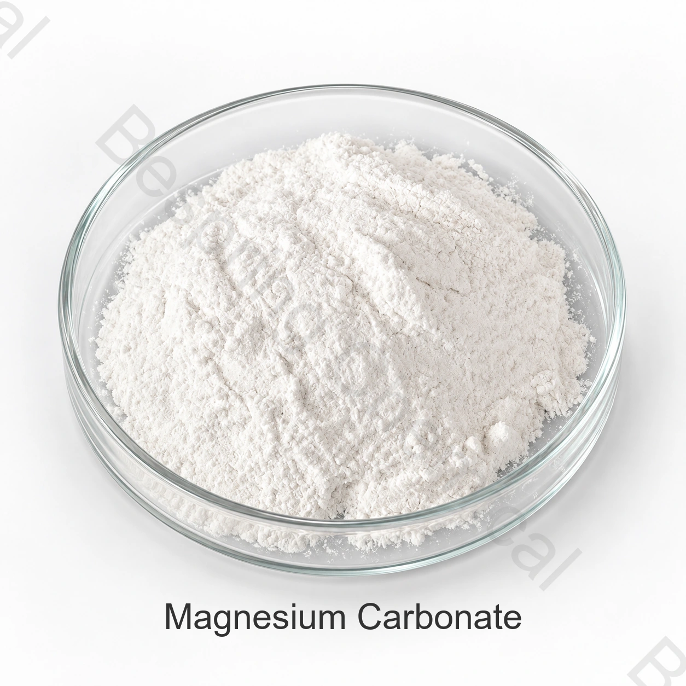

粉末食品
评估成品食品中的流动性、抗结块性能和合法使用水平。
食品级成分 · 矿物成分和抗结块剂 · INS 504(i)
食品级碳酸镁是一种碱式水合碳酸镁材料，可用于合适的配方中作为抗结块、面粉处理或矿物成分。

产品图片 · 订购时请确认等级与包装
分享预期食品、目标限值、测试方法、数量和目的地。
质量文件HACCP、犹太洁食认证、清真认证与 ISO
标准包装25 千克袋装
集装箱装载确认 / 20' FCL
批次证明现行规格和COA可根据要求提供
产品概述
食品级碳酸镁是一种轻质或重质的白色碳酸镁材料。所提供的表格描述了碱式水合组成和40.0-43.5% MgO,而法典将碳酸镁定义为INS 504(i ) 。
商业适用性取决于确切的等级、来源、测试方法、应用和目的地市场的规则。当前签署的规格和批次COA管理交易。
应用评估
这些是配方领域，而不是普遍批准。确认成品的合法用途、剂量和技术性能。
评估成品食品中的流动性、抗结块性能和合法使用水平。
所提供的表格识别面粉改良剂用途;确认目的地市场的授权和性能。
满足成品的镁含量、纯度和生物利用率要求。
指定轻质或重质堆积密度、颗粒行为和水分控制。
商业参考规格
下列为商业参考规格，不代表批次检测结果或统一法规要求；具体等级须结合检测方法和应用试验评估。
可横向滑动或使用键盘查看完整表格
| 检测项目 | 规格 |
|---|---|
| 外观(块状/白色粉末) | 通过测试 |
| MgO 含量 | 40.0–43.5% |
| 鉴别 | 通过测试 |
| 微生物指标 | 通过测试 |
| 水溶性盐类 | ≤1.0% |
| 不溶于酸的物质 | ≤0.05% |
| 砷(As) | ≤3 ppm |
| 钙(Ca) | ≤0.45% |
| 重金属 | ≤0.002% |
| 铁(Fe) | ≤0.02% |
| 铅(Pb) | ≤2 mg/kg |
| 氧化钙 | ≤0.6% |
| 溶解度 稀释硫酸 | 通过测试 |
| 堆积密度——重质 | 500–700 g/L |
| 堆积密度——轻质 | 100–350 g/L |
规格和特性说明: 需要核实物质身份：商业参考身份为 CAS 583678-75-4及组成可变的碱式水合物分子式，而FAO／JECFA碳酸镁记录列出CAS 546-93-0与INS 504(i)。请在经签署的规格、SDS与COA中确认实际商品身份。
采购评估支持
请求当前签署的规格或 TDS、SDS、测试方法和代表或批次 COA。
验证 HACCP、犹太教、清真和 ISO 文档中的准确等级、来源和制造地点。
参阅 FAO/JECFA 碳酸镁规格 并分别适用于目的地市场的规则。
储存与操作
采购常见问题
粉状食品、面粉系统、矿物配方、干混合物是常见的配方领域。必须确认合法用途、剂量和性能，以适用于准确的成品食品和目标市场。
供应的包装为25公斤袋。参考最小订单量为500公斤。
请求当前签署的规格或 TDS、SDS、代表或批次 COA、测试方法和适用的食品质量证书的确切制造地点和等级。
提供预期的食品应用、目标规格、测试方法、数量、包装、目的地、托盘偏好和所需交货日期。
按规格要求采购
分享用途、目标品级和规格、数量、包装、目的地及所需文件。
请提供产品等级和目的地市场，以便确认适用于该订单的资料。
外部参考资料不等于批次分析证书或百泉产品规格书。